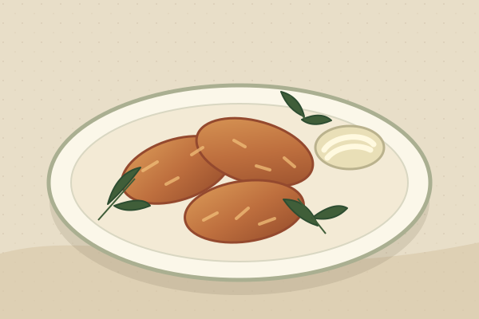

01Disponível
Croquete da casa
Abóbora assada, ervas frescas e aioli de limão.

R$ 18
Controle de demonstração
O que este teste não mostra
Os itens e os valores são inventados. O controle do operador fica na mesma tela apenas para facilitar a demonstração. A cozinha também aparece apenas nesta aba; não há estoque, sincronização entre celulares, cadastro nem envio real de pedidos.
01 / Especificar → implementar → verificar
Esta página demonstra uma regra: ao marcar um item como esgotado, ele sai imediatamente das opções de pedido nesta aba.
Selecione um item ou altere sua disponibilidade para testar a regra.
02 / Área de demonstração
Os pedidos abaixo aparecem apenas nesta aba. Nada é transmitido a um restaurante.